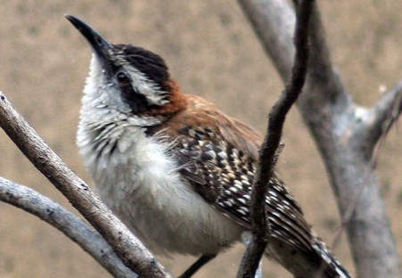

La Guacalchia
(Campylorhynchus capistratus)


La guacalchía, una pequeña ave que puedes observar en ambientes urbanos, en bosques y matorrales de El Salvador. Le gusta volar en grupos y comer insectos, por los que forma parte de la fauna controladora de plagas, muy favorable para tener nuestros hogares libres de moscas y zancudos. Las guacalchías juveniles pasan una buena temporada con sus padres y viven en el nido donde nacieron, este detalle les atribuye que sean colaboradoras con las tareas de supervivencia del grupo familiar hasta que llegue el momento de buscar pareja y formar su propia familia.